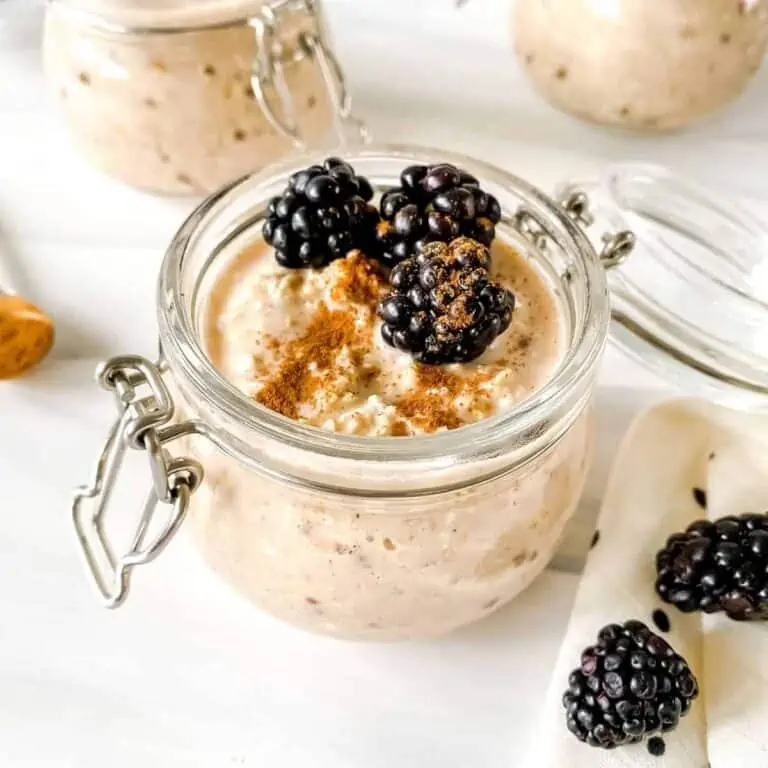

Cinnamon Roll Overnight Oats

Spicing up your grab-and-go breakfasts.
I don't know about you, but I'm all about easy breakfasts. Especially sweet ones. There just something about a dash of cinnamon in the morning that really sets the pace for an excellent day. Cue this breakfast that will feel like a delicacy with every bite. If you really want to enrich it, warm it in the microwave for a few seconds, give it a stir, and drizzle a tiny bit of maple syrup on the top. Voila!
Ingredients
- 1 cup rolled oats
- 1 cup non-dairy milk
- 1/2 tsp ground cinnamon
- 1/4 tsp ground ginger
- 1 tsp chia seeds
- pinch salt (optional)
- 1/2 tsp vanilla extract
- Add all ingredients to a sealing jar.
- Stir very well so the oats are evenly distributed through-out the jar and the consistency is the same all around.
- Set aside in the fridge for a minimum of two hours. Stir after one hour to ensure proper distribution of milk and oats. Add more milk if mixture seems too dry.
- Top with fresh fruit and enjoy!